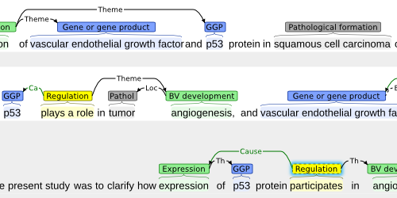

brat case studies
brat has been applied in various real-world annotation projects and is applicable to a great variety of annotation tasks. This page showcases a number of tasks of both of these categories.
projects using brat
brat has been used in annotation efforts throughout its development, and has by version 1.0 already been used to mark tens of thousands of individual annotations in thousands of documents comprising hundreds of thousands of words.
Some annotation projects that have used (or are currently using) brat are introduced in the following.

{kind=link}
Event annotation for cancer biology
we are using brat in [REDACTED] for structured event annotation for scientific manuscript abstracts in cancer domains.
The task involves a large number of types of both physical entities (genes/proteins, chemicals, cell, tissues, pathological formations etc.), molecular level events, and biological processes (gene expression, binding, development, regulation etc.). To assist in the annotation, we are using brat rapid annotation mode to suggest likely types to annotators.

Japanese verb frame annotation
brat is used by the [REDACTED] project for verb frame annotation in FrameNet-like representation.
The annotation involves identifying the core and peripheral arguments of specific verbs in sentence scope and marking up their roles.
To assist in the visualization and annotation of Japanese text, brat integrates the MeCab Japanese word segmentation tool to split the text into tokens and sentences in order to increase the level of read-ability even for languages that lack explicit word segmentation markers.
annotation tasks compatible with brat
A variety of annotation tasks that could be performed in brat are introduced below using examples from annotated corpora.
These annotations have been originally created in various (other) tools and converted into brat format. Converters for many of the original formats are distributed with brat.

CoNLL 2002 Shared Task: Language-Independent Named Entity Recognition
The Conference on Computational Natural Language Learning (CoNLL) 2002 shared task Language-Independent Named Entity Recognition provided two annotated corpora (Spanish and Dutch) annotated with entities of four types (person, organization, location and miscellaneous).
A conversion script from the CoNLL 2002 shared task format to the brat standoff format and a sample of the corpus annotations are distributed with brat.
The full shared task data are freely available from the shared task website.

BioNLP shared task: biomedical event extraction
BioNLP shared task events held in 2009 and 2011 have included four different event extraction tasks.
The brat standoff format is compatible with the data distribution format of the BioNLP shared task, and samples of the annotations of the various corpora provided for the task are distributed with brat.
The full shared task data are freely available from the shared task website.
{kind=link}
BioNLP shared task: coreference in scientific publications
The BioNLP shared task 2011 included a supporting task on coreference in scientific publications.
The brat standoff format is compatible with the representation used in the coreference task, and samples of the annotations of the corpus provided for the task are distributed with brat.
The full shared task data are freely available from the shared task website.